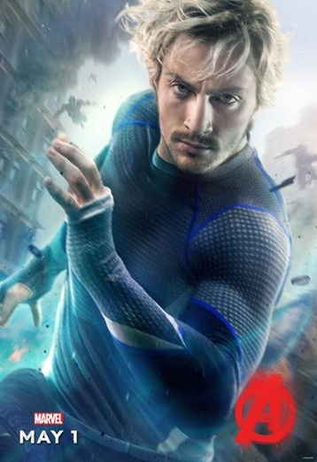
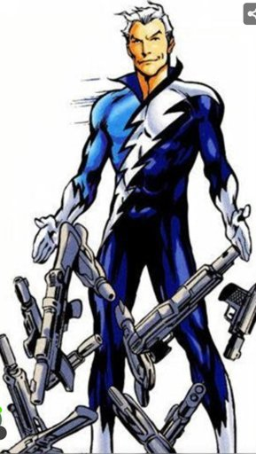

А́арон Те́йлор-Джо́нсон (англ. Aaron Taylor-Johnson, нар. 13 червня 1990, Гай Викомб, Бакінгемшир, Велика Британія) — британський актор театру, кіно та телебачення. Відомий за фільмами: «Ангус, стрінги та поцілунки взасос» (2008), «Стати Джоном Ленноном» (2009), «Пипець» (2010), «Дикуни» (2012), «Анна Кареніна» (2012), «Ґодзілла» (2014), «Месники: Ера Альтрона» (2015), «Нічні звірі» (2016).
Аарон Перрі Джонсон народився 13 червня 1990 року в Гай Викомбі (Бакінгемшир, Англія). Мати — домогосподарка, батько — інженер. Також відомо, що Аарон на 1/8 російський єврей.
Навчався в школі Джека Палмера, вивчаючи драматичне мистецтво, спів, джаз і займаючись акробатикою.
Аарон почав акторську кар'єру вже в 6 років, граючи у невеликих виставах. У 1999 році зіграв сина Макдуфа в лондонській постановці шекспірівського "Макбета". Перші епізодичні ролі отримав у фільмі «The Apocalypse» (2000) та серіалі «Armadillo» (2001). У 2002 році виконав головну роль у фільмі «Том і Томас», в якому він грав двох братів-близнюків.
Ртуть (англ. Quicksilver, читається Квіксільвер), справжнє ім'я П'єтро Максимов (англ. Pietro Maximoff) — супергерой, що з'являється в коміксах видавництва Marvel Comics і їх адаптацій, створений письменником Стеном Лі та художником-співавтором Джеком Кірбі; перша його поява відбулася в коміксі The X-Men #4 у березні 1964 року.
Ртуть володіє надприродною здатністю пересуватися з позамежними швидкостями; до недавнього часу він в межах основного всесвіту Marvel зображувався людиною-мутантом, наділеним надприродними здібностями. Вельми часто персонаж з'являється в зв'язку з Людьми Ікс, будучи вперше представлений як їх противник; в більш пізніх публікаціях він сам стає супергероєм. Ртуть — брат-близнюк Червоної Відьми, зведений брат Полярис; крім цього, він в ряді альтернативних реальностей і до недавнього часу в основний всесвіту представлявся сином Магнето.
Дебютувавши в Срібному столітті коміксів, Ртуть виступав протягом більш ніж п'яти десятиліть публікацій, отримавши власну сольну серію і регулярно з'являючись в складі Месників. Також різні версії персонажа з'являлися в кіно, телевізійних і відеоігрових адаптаціях; в фільмах, створених Marvel Studios, роль Ртуть зіграв актор Аарон Тейлор-Джонсон; в кіносеріалі «Люди Ікс» цю ж роль грає актор Еван Пітерс.